sample_report.pdf (document_id=8)
chunk_id=522 | pages 1-1
Photograph
Logo
chunk_id=523 | pages 2-2
Contents
1.1, 1 = TotalEnergies at a glance. 1.1, 5 = 6. 1.1, 6 = 6.1. 1.1, 6 = Listing details. 1.1, 383 = 384. 1.2, 1 = Our strategy: an integrated multi-energy Company. 1.2, 5 = 14. 1.2, 6 = 6.2. 1.2, 6 = Dividend. 1.2, 383 = 387. 1.3, 1 = Transforming ourselves to reinvent energy. 1.3, 5 = 16. 1.3, 6 = 6.3. 1.3, 6 = Share buybacks. 1.3, 383 = 390. 1.4, 1 = Our climate ambition: net zero emissions by 2050,. 1.4, 5 = . 1.4, 6 = 6.4. 1.4, 6 = Shareholders. 1.4, 383 = 394. , 1 = together with society and targets. , 5 = 20. , 6 = 6.5. , 6 = Information for foreign shareholders Investor relations. , 383 = 396. 1.5 1.6, 1 = Our sustainability ambitions Our investment policy. 1.5 1.6, 5 = 30 34. 1.5 1.6, 6 = 6.6. 1.5 1.6, 6 = . 1.5 1.6, 383 = 397. 1.7, 1 = Innovation for the transformation of TotalEnergies. 1.7, 5 = 37. 1.7, 6 = 7. 1.7, 6 = 7. 1.7, 383 = . 1.8, 1 = Our strengths. 1.8, 5 = 39. 1.8, 6 = General information. 1.8, 6 = General information. 1.8, 383 = 401. 1.9, 1 = Our governance. 1.9, 5 = 43. 1.9, 6 = 7.1. 1.9, 6 = Share capital. 1.9, 383 = 402. 1.10, 1 = Our financial performance. 1.10, 5 = 50. 1.10, 6 = 7.2. 1.10, 6 = Articles of Association; other information. 1.10, 383 = 403. 2, 1 = 2. 2, 5 = . 2, 6 =
chunk_id=524 | pages 2-2
Contents
7.3. 2, 6 = Historical financial information and additional information. 2, 383 = 406. Business overview for fiscal year 2022, 1 = Business overview for fiscal year 2022. Business overview for fiscal year 2022, 5 = 65. Business overview for fiscal year 2022, 6 = 8. Business overview for fiscal year 2022, 6 = 8. Business overview for fiscal year 2022, 383 = . 2.1, 1 = Integrated Gas, Renewables & Power segment. 2.1, 5 = 66. 2.1, 6 = Consolidated Financial Statements. 2.1, 6 = Consolidated Financial Statements. 2.1, 383 = 407. 2.2 2.3, 1 = Exploration & Production segment Upstream oil and gas activities. 2.2 2.3, 5 = 81 89. 2.2 2.3, 6 = statements 8.1. 2.2 2.3, 6 = Statutory auditors' report on the consolidated financial. 2.2 2.3, 383 = 408. 2.4, 1 = Refining & Chemicals segment. 2.4, 5 = 101. 2.4, 6 = 8.2. 2.4, 6 = Consolidated statement of income. 2.4, 383 = 414. 2.5, 1 = Marketing & Services segment. 2.5, 5 = 111. 2.5, 6 = 8.3. 2.5, 6 = Consolidated statement of comprehensive income. 2.5, 383 = 415. , 1 = . , 5 = . , 6 = 8.4. , 6 = Consolidated balance sheet. , 383 = 416. 3, 1 = 3. 3, 5 = . 3, 6 = 8.5. 3, 6 = Consolidated statement of cash flow. 3, 383 = 417. Risks 3.1, 1 = and control Risk factors. Risks 3.1, 5 = 119 120. Risks 3.1, 6 = Consolidated 8.6. Risks 3.1, 6 = statement of changes in shareholders' equity. Risks 3.1, 383 = 418. 3.2, 1 = Countries under economic sanctions. 3.2, 5 = 130. 3.2, 6 = 8.7. 3.2, 6 = Notes to the Consolidated Financial Statements. 3.2, 383 = 419. 3.3, 1 = Internal control and risk management procedures. 3.3, 5
chunk_id=525 | pages 2-2
Contents
= 134. 3.3, 6 = 9. 3.3, 6 = . 3.3, 383 = . 3.4 3.5, 1 = Insurance and risk management Legal and arbitration proceedings. 3.4 3.5, 5 = 141 142. 3.4 3.5, 6 = Supplemental oil. 3.4 3.5, 6 = and gas information (unaudited). 3.4 3.5, 383 = 537. 3.6, 1 = Vigilance Plan. 3.6, 5 = 143. 3.6, 6 = 9.1 Oil and gas. 3.6, 6 = information pursuant to FASB Accounting Standards Codification 932. 3.6, 383 = 538. 4, 1 = 4. 4, 5 = . 4, 6 = 9.2. 4, 6 = Other information. 4, 383 = 555. Report on corporate governance, 1 = Report on corporate governance. Report on corporate governance, 5 = 177. Report on corporate governance, 6 = 9.3. Report on corporate governance, 6 = Report on the payments made to governments. Report on corporate governance, 383 = . 4.1, 1 = Administration and management bodies. 4.1, 5 = 178. 4.1, 6 = . 4.1, 6 = (Article L. 22 - 10 - 37 of the French Commercial Code). 4.1, 383 = 558. 4.2, 1 = Statement regarding corporate governance Compensation for the administration and. 4.2, 5 = 224. 4.2, 6 = 9.4. 4.2, 6 = Reporting of payments to governments for purchases of oil, gas and minerals (EITI reporting). 4.2, 383 = 587. 4.3, 1 = management bodies. 4.3, 5 = 225. 4.3, 6 = 10. 4.3, 6 = . 4.3, 383 = . 4.4 4.5, 1 = Additional information about corporate governance Statutory auditors' report on related party agreements. 4.4 4.5, 5 = 257 262. 4.4 4.5, 6 = Statutory financial statements of TotalEnergies. 4.4 4.5, 6 = SE. 4.4 4.5, 383 = 591. 5, 1 = 5. 5, 5 = . 5, 6 = 10.1.
chunk_id=526 | pages 2-2
Contents
5, 6 = Statutory auditors' report on the financial statements. 5, 383 = 592. Non-financial performance, 1 = Non-financial performance. Non-financial performance, 5 = 263. Non-financial performance, 6 = 10.2. Non-financial performance, 6 = Statutory Financial Statements of TotalEnergies SE as parent company. Non-financial performance, 383 = 596. 5.1, 1 = Sustainable development at the heart of the strategy. 5.1, 5 = 264. 5.1, 6 = 10.3. 5.1, 6 = Notes to the statutory financial statements. 5.1, 383 = 600. 5.2, 1 = Business model. 5.2, 5 = 271. 5.2, 6 = 10.4. 5.2, 6 = Other financial information concerning the parent. 5.2, 383 = 616. 5.3, 1 = Health & Safety for everyone. 5.3, 5 = 271. 5.3, 6 = . 5.3, 6 = company. 5.3, 383 = . 5.4, 1 = Climate change-related challenges (as per TCFD recommendations). 5.4, 5 = 279. 5.4, 6 = 11 Additional reporting information. 5.4, 6 = 11 Additional reporting information. 5.4, 383 = 619. 5.5, 1 = Environmental challenges. 5.5, 5 = 317. 5.5, 6 = 11.1. 5.5, 6 = World Economic Forum Core ESG metrics. 5.5, 383 = 620. 5.6 5.7, 1 = A Company committed to its employees Actions to respect human rights. 5.6 5.7, 5 = 326 344. 5.6 5.7, 6 = 11.2. 5.6 5.7, 6 = SASB Report. 5.6 5.7, 383 = 631. 5.8, 1 = Fighting corruption and tax evasion. 5.8, 5 = 349. 5.8, 6 = . 5.8, 6 = . 5.8, 383 = . 5.9, 1 = Value creation for host regions. 5.9, 5 = 354. 5.9, 6 = Glossary. 5.9, 6 = Glossary. 5.9, 383 = 655. 5.10, 1
chunk_id=527 | pages 2-3
Contents
= Contractors and suppliers. 5.10, 5 = 361. 5.10, 6 = . 5.10, 6 = . 5.10, 383 = . 5.11, 1 = Reporting scopes and methodology. 5.11, 5 = 366. 5.11, 6 = Cross-reference lists. 5.11, 6 = Cross-reference lists. 5.11, 383 = 663. 5.12, 1 = Independent third party's report. 5.12, 5 = . 5.12, 6 = . 5.12, 6 = . 5.12, 383 = . , 1 = Performance indicators. , 5 = 375. , 6 = Disclaimer. , 6 = Disclaimer. , 383 = . , 1 = . , 5 = 370. , 6 = . , 6 = . , 383 = . 5.13, 1 = . 5.13, 5 = . 5.13, 6 = . 5.13, 6 = . 5.13, 383 = 672
Logo
chunk_id=528 | pages 3-5
Universal Registration Document 2022
including the Annual Financial Report
This is a translation into English of the Universal Registration Document 2022 including the Annual Financial Report of the Company issued in French and it is available on the website of the Issuer.
'I certify, that the information contained in this Document d'enregistrement universel (Universal Registration Document) is in accordance with the facts and makes no omission likely to affect its import.
I certify, to the best of my knowledge, that the Statutory and Consolidated Financial Statements of TotalEnergies SE (the Corporation) have been prepared in accordance with applicable set of accounting standards and give a true and fair view of the assets, liabilities, financial position and profit and loss of the Corporation and of all the entities included in the consolidation, and that the rapport de gestion (management report) of the Board of Directors as referenced in the cross reference list included on page 667 of this Document d'enregistrement universel (Universal Registration Document) presents a fair view of the development and performance of the business and financial position of the Corporation and of all the entities included in the consolidation, taken as a whole, and describes the principal risks and uncertainties they face.'
On March 24, 2023 Patrick Pouyanné Chairman and Chief Executive Officer
Logo
This Universal Registration Document was filed on March 24, 2023 with the French Financial Markets Authority (Autorité des marchés financiers), as the competent authority under Regulation (EU) 2017/1129, without prior approval in accordance with Article 9 of said Regulation.
This Document d'enregistrement universel (Universal Registration Document) may be used for the purposes of a public offer of financial securities or the admission of financial securities to trading on a regulated market only if supplemented by a transaction note and, if applicable, a summary and all amendments to the Document d'enregistrement universel (Universal Registration Document). The group of documents then formed is approved by the French Financial Markets Authority in accordance with Regulation (EU) 2017/1129.
This document has not been approved by the UK Financial Conduct Authority and does not constitute a Universal Registration Document within the meaning of applicable UK law.
Icon
1
chunk_id=529 | pages 5-5
Presentation of the Company Integrated report
1.1
TotalEnergies at a glance
6
1.1.1
1.1.2
1.1.3
1.2
1.2.1
A multi-energy company
Our history: an energy transition in progress
Our business model
Our strategy: an integrated multi-energy
Company
How can we respond to current energy demand while
1.2.2
1.2.3
1.3
1.3.1
1.3.2
1.3.3
1.3.4
1.4
1.4.1
1.4.2
1.5
preparing for the future?
A Net Zero Company by 2050, together with society
2020-2030: a decade of transformation for now and
the future
Transforming ourselves to reinvent energy
Low-carbon electricity: growth and profitability
Natural gas: a key fuel for the energy transition
Anticipating changes in demand by adapting our
petroleum products sales
New low carbon energies
Our climate ambition: net zero emissions by
2050, together with society
Our objectives
Our levers to achieve our ambition of net
zero emissions
Our sustainability ambitions and targets
6
10
12
14
14
14
15
16
16
17
18
19
20
20
22
30
chunk_id=530 | pages 5-5
Presentation of the Company Integrated report
1.6, 1 = Our investment policy. 1.6, 2 = 34. 1.6.1, 1 = Major investments over the period 2020-2022. 1.6.1, 2 = 35. 1.6.2, 1 = Major planned investments. 1.6.2, 2 = 36. 1.6.3, 1 = Financing mechanisms. 1.6.3, 2 = 36. 1.7, 1 = Innovation for the transformation of TotalEnergies. 1.7, 2 = 37. 1.7.1, 1 = OneTech, engine of the transformation. 1.7.1, 2 = 37. 1.7.2, 1 = R&D at the forefront of the Transformation of TotalEnergies. 1.7.2, 2 = 38. 1.7.3, 1 = Digital acceleration as a performance lever. 1.7.3, 2 = 39. 1.8, 1 = Our strengths. 1.8, 2 = 39. 1.8.1, 1 = Our employees. 1.8.1, 2 = 39. 1.8.2, 1 = Our integrated multi-energy model. 1.8.2, 2 = 40. 1.8.3, 1 = Our operational excellence. 1.8.3, 2 = 41. 1.8.4, 1 = A global footprint, with local roots. 1.8.4, 2 = 42. 1.8.5, 1 = An ongoing dialogue with our stakeholders. 1.8.5, 2 = 42. 1.9, 1 = Our governance. 1.9, 2 = 43. 1.9.1, 1 = A fully committed Board of Directors. 1.9.1, 2 = 43. 1.9.2, 1 = An Executive Committee entrusted with implementing the Company's strategy. 1.9.2, 2 = 46. 1.9.3, 1 = An operational structure built around the Company's business segments. 1.9.3, 2 = 47. 1.9.4, 1 = Risk management system. 1.9.4, 2 = 50. 1.10, 1 = Our financial performance. 1.10, 2 = 50. 1.10.1, 1 = Overview of the 2022 fiscal year. 1.10.1, 2 = 50. 1.10.2, 1 = Liquidity and capital
chunk_id=531 | pages 5-5
Presentation of the Company Integrated report
resources. 1.10.2, 2 = 59. 1.10.3, 1 = Trends and outlook. 1.10.3, 2 = 60. 1.10.4, 1 = Significant changes. 1.10.4, 2 = 63
Logo
chunk_id=532 | pages 6-6
1.1.1 A multi-energy company
TotalEnergies is a global multi-energy company that produces and markets energies: oil and biofuels, natural gas and green gases, renewables and electricity. Our more than 100,000 employees are committed to energy that is more affordable, cleaner, more reliable and accessible to as many people as possible. Active in close to 130 countries, TotalEnergies puts sustainable development in all its dimensions at the heart of its projects and operations to contribute to the well-being of people.
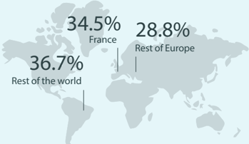
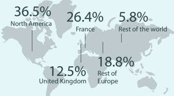
chunk_id=533 | pages 6-6
Our employees
Employees breakdown by geographical area Safety, Respect for Each Other, Pioneer Spirit, Stand Together and Performance-Minded are what drive us. These values guide daily the actions and relations of the Company with its stakeholders.
These five strong values also require all of TotalEnergies' employees to behave in an exemplary manner. Priority is given to safety, security, health, the environment, integrity in all its forms (including the fight against corruption, fraud and anti-competitive practices) and human rights.
Employees breakdown by gender
Geographical map
Workforce as of December 31, 2022: 101,279
chunk_id=534 | pages 6-6
Shareholding structure by ideological area (1)
Estimate as of December 31, 2022, based on the request for the identi fi cation of shareholders made on that date, pursuant to Article L. 228-2 of the French Commercial Code.
Geographical map
- (1) Excluding treasury shares.
- (2) On the basis of employee shareholding as defined in Article L. 225-102 of the French Commercial Code and Article 11 paragraph 6 of the Articles of Association of the Corporation.
Our climate ambition : NET ZERO EMISSIONS BY2050, together with society
36.3%
Icon
Icon
Women
63.7%
It is through the strict adherence of our employees to these values and to this course of action that our Company intends to build strong and sustainable growth for ourselves and for all of our stakeholders.
In this way, we deliver on our commitment to better energy.
chunk_id=535 | pages 6-6
Proven expertise in 2022
- 101,279 employees
- Nearly 160 nationalities
- More than 740 business-related competencies
- 470,000 days of training
- More than 400 talent developers to help employees along their professional development path
chunk_id=536 | pages 6-6
Employees in 2022
- $9.0 billion payroll (including social security charges)
- €163 M for training
- 92.1% of employees on permanent contracts, and women account for 42.1% of employees hired on permanent contracts
Men
- 83.4% of employees hired by the Company and 62.7% of managers hired were non-French nationals
chunk_id=537 | pages 6-6
Shareholding structure by shareholder type
Estimate as of December 31, 2022, based on the request for the identi fi cation of shareholders made on that date, pursuant to Article L. 228-2 of the French Commercial Code.
13.6% Individual shareholders
Icon
Icon
74.4% Institutional
shareholders
Icon
Company employees 6.8% (2)
Icon
Treasury shares 5.2%
Approximately 1,500,000 Number of individual shareholders
chunk_id=538 | pages 7-7
2022 KEY FIGURES
Financial indicators (1)
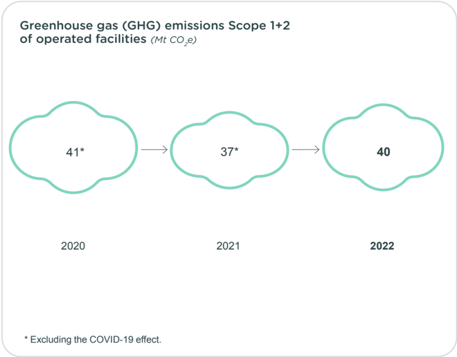
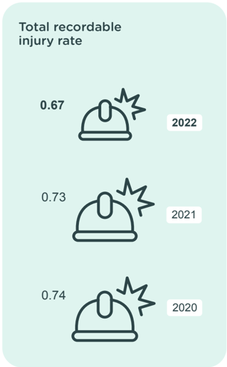
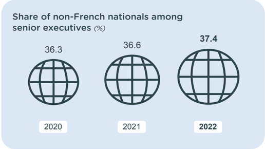
chunk_id=539 | pages 7-7
$36.2 billion
Adjusted net income (TotalEnergies share)
chunk_id=540 | pages 7-7
$20.5 billion
Net income (TotalEnergies share)
chunk_id=541 | pages 7-7
€2.81 +€1
Ordinary and special dividend per share for the fiscal year 2022 (2)
chunk_id=542 | pages 7-7
Non-financial indicators
Other
Icon
28.2%
Return on average capital employed (ROACE)
chunk_id=543 | pages 7-7
$16.3 billion
Net investment including 4 G$ in low-carbon energies
chunk_id=544 | pages 7-7
$47.0 billion
Operating cash flow before working capital changes w/o financial charges (DACF)
chunk_id=545 | pages 7-7
$23.2/boe
Pre-dividend organic cash breakeven
Other
Icon
chunk_id=546 | pages 7-7
32.5%
Return on equity (ROE)
7.0%
Gearing ratio (3)
Logo
chunk_id=547 | pages 8-8
OUR OPERATIONAL PERFORMANCE
Gross installed power generation capacities (1) (GW)
Icon
Portfolio of gross renewable power generation capacities at year-end 2022 (2) (GW)
Icon
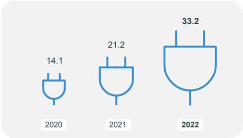
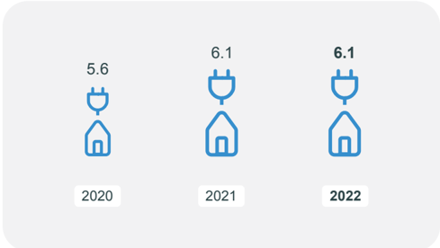
chunk_id=548 | pages 8-8
Net power production (4)
(TWh)
Flow chart
Power sales - number of BtB and BtC client sites (millions)
Icon
Gas sales - number of BtB and BtC client sites (millions)
Bar chart
LNG sales volumes (Mt)
Icon
LNG production
(Mt)
Icon
chunk_id=549 | pages 9-9
OUR OPERATIONAL PERFORMANCE
Hydrocarbon proved reserves (1) by geographic areas (Mboe)
Pie chart
Hydrocarbon production by geographic area (kboe/d)
Pie chart
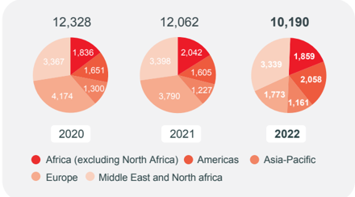
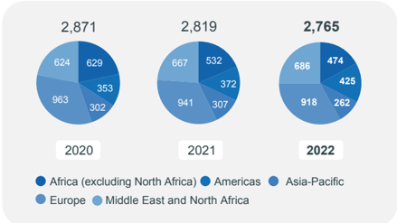
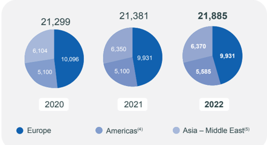
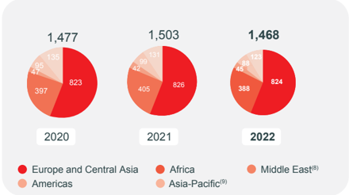
chunk_id=550 | pages 9-9
Crude oil refining capacity (2)
(kb/d)
Pie chart
chunk_id=551 | pages 9-9
Refinery throughput (3)
(kb/d)
Icon
chunk_id=552 | pages 9-9
Petrochemical production capacity by geographic area
(kt)
Pie chart
chunk_id=553 | pages 9-9
Petrochemical products production volume
(kt)
Marketing & Services (7) petroleum product sales by geographic area (kb/d)
Icon
Production of biofuels
Pie chart
(kt)
Icon
Logo
chunk_id=554 | pages 10-10
1.1.2 Our history: an energy transition in progress
The Company was founded on March 28, 1924. Historic player in energy it discovered major fields worldwide and developed an ever-growing number of advanced products and services, created in its refineries and marketed through its retail network. The Company has gradually diversified its activities and broadened its presence around the world. We have positioned ourselves in the gas, refining, petrochemical and petroleum product distribution segments. We have begun a transition towards renewable energies: solar, sustainable biofuels and electricity, mostly from renewable sources.
Creation in Brussels of the Compagnie Financière belge des Pétroles, known as PetroFina.
1920
The IPC is awarded a 75-year concession on March 14.
1925
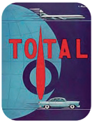
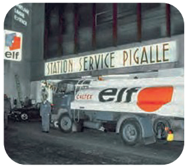
chunk_id=555 | pages 10-10
1924
Creation of the Compagnie française des Pétroles (CFP)
On September 20, 1923, the French President of the Council Raymond Poincaré entrusts an important mission to Ernest Mercier: create a «tool capable of carrying out a national oil policy». Six months later, the Compagnie française des Pétroles is born on March 28, 1924.
chunk_id=556 | pages 10-10
1954
Launch of the TOTAL brand by CFP At the beginning of the 1950s, the
Logo
leaders of CFP and CFR (Compagnie Française de Ra/uniFB03nage) decide to create their own distribution network, and a brand for it. The new TOTAL brand and logo are adopted in 1954.
chunk_id=557 | pages 10-10
1956
Discovery of the Edjeleh, Hassi R'Mel (gas) and Hassi Messaoud (oil) fields in the Algerian Sahara
The exploration campaigns that SN Repal and CFP-A had initiated in 1946 result in the discovery, in 1956, of huge oil fields in Edjeleh and Hassi Messaoud and gas reserves in Hassi R'Mel.
CFP shares are first traded on the Paris Stock Exchange.
Start of production of the Gonfreville refinery in Normandy (France), with an annual capacity of 900,000 tons of crude oil.
1929
chunk_id=558 | pages 10-10
1927
Initial discovery at the Kirkuk field in Iraq CFP makes its first discovery, under an agreement with the government of Iraq. Oil rises to the surface in Kirkuk, a field with considerable reserves. This marks the beginning of TOTAL 's adventure in the Middle East.
chunk_id=559 | pages 10-10
1951
SNPA discovers the Lacq gas field in France The gas rises from a depth of 3,450 meters at extremely high pressure. The specialist crews take five days and four nights to harness the eruption. Lacq is later found to be a gigantic natural gas field containing some 262 billion cubic meters.
First offshore well on Umm Shaif (Abu Dhabi).
1958
chunk_id=560 | pages 10-10
1961
Discovery of the first offshore fields in Gabon The Anguille field is the first one found.
1933
1939
Discovery of the Saint-Marcet gas field, the first hydrocarbon reserves found in France Creation of Régie Autonome des Pétroles (RAP), which later becomes the Elf Group, to explore a vast area around Saint Gaudens.
chunk_id=561 | pages 10-10
1941
Creation of Société nationale des pétroles d'Aquitaine (SNPA).
Photograph
Launch of the Elf brand A countrywide campaign, 'Red circles are coming' introduces France to the Elf brand starting on the night of April 27, 1967.
1967
chunk_id=562 | pages 10-11
1970
Elf takes control of Antar.
TOTAL takes a permit in Indonesia, and goes on to find the Bekapai field in 1972 and the gigantic Handil field in 1974.
The Girassol field on Block 17 in Angola starts production.
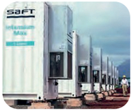
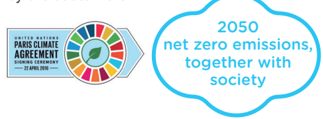
chunk_id=563 | pages 11-11
2000
Following the merger of Fina in 1999, TOTAL acquires Elf Aquitaine The new Group is called TotalFinaElf and is the world's fourth largest oil major.
chunk_id=564 | pages 11-11
1991
CFP, which had become Total-CFP in 1985, becomes TOTAL.
chunk_id=565 | pages 11-11
1983
Birth of the company Atochem, an SNEA subsidiary, the merger of ATO Chimie, Chloé Chimie and part of Péchiney Ugine Kuhlmann.
chunk_id=566 | pages 11-11
1976
Creation of Société nationale Elf Aquitaine (SNEA), the merger of ERAP and SNPA.
chunk_id=567 | pages 11-11
1974
The Group acquires Hutchinson-Mapa, a specialist in rubber processing.
chunk_id=568 | pages 11-11
1971
The Ekofisk field in the North Sea starts production.
TotalFinaElf changes its name to TOTAL.
chunk_id=569 | pages 11-11
2003
Investment in the solar energy sector with the acquisition of 60% of the US company SunPower On June 15, 2011, TOTAL and SunPower Corp. announce the success of TOTAL's friendly tender on SunPower to create a new global leader in the solar industry.
chunk_id=570 | pages 11-11
Acquisition of Direct Energie
On July 6, 2018, TOTAL announces the completion of the acquisition of Direct Energie and the launch of a tender offer on the company. This operation enables the Group to accelerate its integration downstream along the full gas and power value chain and to reach critical mass in the French and Belgium markets, where it is growing fast.
chunk_id=571 | pages 11-11
TOTAL acquires Engie's LNG business and becomes the world's number-two liquefied natural gas player.
TOTAL acquires exploration and production company Mærsk Oil & Gas A/S in a share and debt transaction. This acquisition makes TOTAL the second largest operator in the offshore North Sea.
chunk_id=572 | pages 11-11
2019
Acquisition of 26.5% in the Mozambique LNG project This acquisition stems from an agreement with Occidental to acquire Anadarko's assets in Africa, and expands TOTAL's position in liquefied natural gas.
chunk_id=573 | pages 11-11
2017
Launch of Total Spring in France.
Photograph
chunk_id=574 | pages 11-11
2016
Acquisition of Saft Groupe
On July 18, 2016, TOTAL acquires Saft Groupe, a world leading designer and manufacturer of advanced technology batteries for industry, complementing its portfolio with electricity storage solutions, a key component of the future growth of renewable energies.
Acquisition of Lampiris in Belgium.
TOTAL becomes TotalEnergies and turns into a multi-energy company with the ambition of being a major player in the energy transition.
2021
chunk_id=575 | pages 11-12
TOTAL states its new climate ambition: carbon neutrality by 2050
On May 5, 2020, TOTAL announces its ambition of reaching net zero emissions by 2050, together with society, from the production to the use of the energy products by the customers.
Logo
Logo
1
chunk_id=576 | pages 12-12
1.1.3 Our business model
Integrated value chain
Flow chart
chunk_id=577 | pages 13-13
Employees
q
q
q
q
q
101,279
employees
Nearly
160 nationalities
More than 740 business-related competencies
470,000
days of training
More than 400 talent developers to help employees along their professional development path
chunk_id=578 | pages 13-13
A responsible innovation
$9.0 billion payroll (including social security charges)
€163 million for training
92.1% of employees on permanent contracts and women account for 42.1% of employees hired on permanent contracts
83.4% of employees hired by the Company and 62.7% of managers hired were non-French nationals
q
q
q
q
chunk_id=579 | pages 13-13
Customers
q
q
q
R&D budget:
$762 million
18 R&D centers worldwide
More than 200 patent applications in 2022
chunk_id=580 | pages 13-13
Top-tier industrial and commercial assets
q
16.8 GW (1) of gross installed renewable power generation capacities
q
q
q
More than 42,000 EV operated charging points
Proved reserves of 10.2 Bboe and hydrocarbon production of 2,765 kboe/d
16 refineries including 1 biorefinery q 29 petrochemical sites including 6 integrated platforms (refining-petrochemicals)
q 84 specialty chemicals production sites q 36 production sites operated (lubricants and greases)
q
More than 14,600 service stations in close to 65 countries
chunk_id=581 | pages 13-13
Solid financials
q
q
q
q
q
q
q
Sales: $281 billion
33.2 TWh of net power production, including 10.4 TWh from renewable sources
96.3 TWh of gas delivered to 2.7 million BtB and BtC clients sites
55.3 TWh of power delivered to 6.1 million BtB and BtC clients sites
Close to 100 products and solutions bearing the Ecosolutions label by TotalEnergies
More than 10,000 patents in force worldwide
3 rd largest LNG player worldwide with 48.1 Mt of LNG sold in 2022, including 17.0 Mt from equity production of the Company
chunk_id=582 | pages 13-13
Suppliers
q
$27 billion worth of purchases of goods and services, from a network of more than 100,000 suppliers, supporting hundreds of thousands of direct and indirect jobs worldwide
chunk_id=583 | pages 13-13
Shareholders
q
q
q
q
Operating cash flow before working capital changes without financial charges: $47.0 billion
Net investments: $16.3 billion
Gearing ratio (excluding leases): 7.0%.
Pre-dividend organic cash breakeven : $23.2/boe
chunk_id=584 | pages 13-13
Geographic reach
q
$10.0 billion distributed as dividends (ordinary and special) (2)
q
Approximately 1.5 million individual shareholders
q
65% of employees are shareholders
chunk_id=585 | pages 13-13
Communities
q
Present in close to 130 countries
q
Hydrocarbon production in close to 30 countries
chunk_id=586 | pages 13-13
Environment
q
q
Fresh water withdrawal: 107 Mm 3
Net primary energy consumption: 166 TWh (operated perimeter)
Data as of December 31, 2022.
(1) Including 20% of Adani Green Energy Ltd gross capacities effective first quarter 2021 and including 50% of Clearway Energy Group effective third quarter 2022.
(2) Excluding dividends paid to non-controlling minority interests.
(3) Excluding biogenic methan.
(4) GHG Protocol - Category 11.
q
Fostering social and economic development in host countries with
contributions amounting to $19,825 million in income tax, $13,219 million in production taxes paid by EP activities, $2,202 million in employer social charges and $17,689 million in excise taxes
q
A global integrated local development approach (in -country value)
chunk_id=587 | pages 13-13
Climate
q
Reducing GHG emissions (Scope 1+2) from operated facilities from 46 Mt CO2e in 2015 to 40 Mt CO2e in 2022
q
q
q
q
Reducing methane emissions (3) from operated facilities by 50% between 2010 and 2020 and by 34% between 2020 and 2022
Scope 3 (4) GHG emissions limited to 389 Mt CO2e excluding the COVID-19 effect in 2022, below the level of 2015
Reducing Scope 3 GHG emissions of the petroleum products sold worldwide by 27% excluding the COVID-19 effect in 2022, compared to 2015
Reducing carbon intensity of the energy products used by customers by 12% between 2015 and 2022
Logo
chunk_id=588 | pages 14-14
1.2.1 How can we respond to current energy demand while preparing for the future?
The energy transition is underway but the world still uses fossil fuels to meet 81% of its energy needs. So to keep global warming to well below 2°C, in line with the Paris Agreement, we must drastically reduce our consumption of fossil fuels (coal, oil, gas) and make the world energy system evolve by building the new low-carbon energy system at a much faster pace. Our collective challenge - which became evident in 2022 - is to reconcile the energy transition with the need for energy security and concerns over its cost. When the supply of oil or natural gas is restricted while demand continues to rise, the resulting price increases and supply insecurity have an immediate and acute impact on communities. To meet the challenge of the energy transition and still ensure that reliable energy is available in the short term at the lowest possible cost, we need to invest in two energy systems simultaneously: we must ensure the current system continues to operate responsibly, and at the same time speed efforts to build a new system centered on low-carbon energies (renewable electricity, biofuels and biogas, clean hydrogen and synthetic fuels, CCS solutions for offsetting residual fossil-fuel emissions).
We can also leverage two measures that will deliver immediate results: replacing coal in energy applications whenever possible and investing heavily to improve energy efficiency.
That, in essence, is TotalEnergies' strategy: to continue providing the energy the world needs now, notably natural gas to replace coal, while responsibly and sustainably accelerating the transition to low carbon energy solutions. This is how, in practice we support to the goals of the Paris Agreement, which calls for reducing greenhouse gas emissions in the context of sustainable development and the fight against poverty, and which aims to keep the increase in average global temperatures well below 2°C compared to pre-industrial levels.
Events in 2022 gave the Company renewed confidence in its strategy. It is investing with discipline, at a time when its markets continue to evolve at an uncertain pace. Its portfolio of multi-energy businesses gives it the flexibility and discretion to position itself as a leader in the energy transition, regardless of its speed.
chunk_id=589 | pages 14-14
1.2.1 How can we respond to current energy demand while preparing for the future?
The energy transition depends, first, on electrifying energy use, which will require a massive increase in green electricity. TotalEnergies is expanding across the entire electricity value chain, from production of intermittent renewables for flexible power generation to natural gas, storage, trading, and sales, with an eye on profitability. Its goal is to build an Integrated Power segment with a return on average capital employed higher than 10% and to rank among the world's top five providers of solar and wind energy by 2030, with gross capacity of 100 GW and an interim target of 35 GW by 2025 (the Company reached 17 GW as of yearend 2022).
Second, the energy transition depends on the development of new, lowcarbon energies (biofuels and biogas, clean hydrogen and synthetic fuels combining hydrogen and carbon) that TotalEnergies has the core skills to produce. The Company is expanding into these new markets by focusing on circular resource management and deploying less-mature technologies at our own sites to test its business viability.
For natural gas, a transition energy, TotalEnergies is pursuing growth across the liquefied natural gas (LNG) value chain to consolidate its position as the world's third-largest supplier. LNG plays a key role in the net-zero roadmap for many coal-consuming countries. It's also a perfect partner for intermittent renewable energies: flexible, controllable CCGT plants ensure a secure electricity supply in the face of unforeseen weather events and fluctuations in demand.
In the oil business, the Company is pursuing a highly selective strategy, restricting its capital expenditure to projects that are less carbon-intensive and have a low breakeven point. That strategy allows to take full advantage of worldwide demand for oil, which continues to climb but is expected to start trending downward in the medium term as transportation goes electric; it can therefore ensure that its business operations remain profitable and resilient over the long term.
As they evolve, the energy markets are becoming increasingly interconnected and interdependent, particularly since electricity - the energy at the center of the transition - is a secondary energy, meaning that it depends on other energies and markets.
chunk_id=590 | pages 14-14
1.2.1 How can we respond to current energy demand while preparing for the future?
The integrated multi-energy strategy of the Company and its solid financial base are strengths that allow it to be a major player of the sustainable energy the world needs and make the most of the current changes, including the potential price volatility they may cause.
chunk_id=591 | pages 14-14
1.2.2 A Net Zero Company by 2050, together with society
With regard to greenhouse gas emissions, TotalEnergies is committed to shrinking its carbon footprint from production, processing and delivery to its customers. To begin with, the Company is moving forward with an ambitious action plan to reduce the greenhouse gas emissions for which it is responsible (Scope 1+2 emissions from operated facilities) to the strict minimum. The Company also invests in carbon storage and sequestration projects to 'neutralize' its residual emissions and to be able to offer those CCS solutions to its major industrial customers.
Although the speed of transition will depend on the pace of change in government policies, consumer practices and corresponding demand, TotalEnergies has embraced the need to offer its customers affordable less carbon-intensive energy products, and to lend support to its partners and suppliers with their own low-carbon strategies.
Drawing on the actions already taken to revise its energy offerings and reduce carbon emissions from its operations, in 2022 TotalEnergies published an outline of how its businesses might evolve as it become a carbon-neutral energy company by 2050, together with society.
chunk_id=592 | pages 14-15
By 2050, TotalEnergies would produce:
- -about 50% of its energy in the form of low-carbon electricity with the corresponding storage capacity, totaling about 500 TWh/y, on the premise that it develops about 400 GW of renewable capacity,
- -about 25% of its energy, equivalent to 50 Mt/y of decarbonized fuels in the forms of biogas, hydrogen or synthetic liquid fuels from the circular reaction: H 2 + CO2 k e-fuels.
- -about 1 Mb/d of oil and gas (about a quarter of the total in 2030, consistent with the decline envisaged in the IEA's Net Zero Scenario), primarily liquefied natural gas (roughly 0.7 Mb/d, or 25-30 Mt/y) with very low-cost oil accounting for the rest. Most of that oil would be used in the petrochemicals industry to produce about 10 Mt/y of polymers, of which two thirds would come from the circular economy.
chunk_id=593 | pages 15-15
That oil and gas would represent:
- -Scope 1 residual emissions of about 10 Mt/y CO 2e, with methane emissions almost eliminated (to below 0.1 Mt/y CO2e), those emissions would be offset in full by projects using nature-based solutions (natural carbon sinks),
- -Scope 3 emissions totaling about 100 Mt/y CO2e.
chunk_id=594 | pages 15-15
1.2.3 2020-2030: a decade of transformation for now and the future
The vision of TotalEnergies potential transformation by 2050 is backed by an investment policy designed to accelerate access to low-carbon solutions (electricity and renewable energies, biogas and biofuels, lowcarbon fuels, CCS) while we continue to meet the world's current energy demand. The world's population continues to grow and the inhabitants of emerging nations have legitimate aspirations to a higher standard of living, comparable to that of Western countries. The years 2020 to 2030 will mark TotalEnergies' transformation into a multi-energy company.
In practical terms, over the coming decade to 2030, TotalEnergies' ambition is to:
- -increase its energy production from 14 PJ/d to 20 PJ/d to meet growing demand. Electricity (primarily renewable power) would account for half that increase, with target power generation of about
chunk_id=595 | pages 15-15
Production and sales of energy
Bar chart
- 130 TWh, and liquefied natural gas would make up the balance, while oil production in the years up to 2030 would remain generally stable,
- -pursue efforts to decarbonize the energy products offered to end customers, by decreasing its sales of petroleum products by more than 30% to align those sales with production of about 1.4 Mb/d. That reduction is consistent with the strategy of integration across value chains, and reflects the anticipated decline in fuel demand in Europe, where the shift to electric road transportation is well underway. As a result, oil will account for no more than 30% of its total sales, compared to 53% in 2019.
That forecast trend in its business operations up to 2030 underlies TotalEnergies' carbon emissions commitments over that same period.
Logo
To get to net zero together with society, TotalEnergies would help to 'eliminate' the equivalent of 100 Mt/y CO2e generated by its customers by developping:
- -a carbon storage service activity for customers that would store 50 to 100 Mt/y CO2e,
- -an industrial e-fuels business that would prevent 25 to 50 Mt/y CO 2e for the Company's customers through their production with 100% green hydrogen, while offsetting the intermittent nature of renewable energies to make them a viable replacement for fossil fuels.